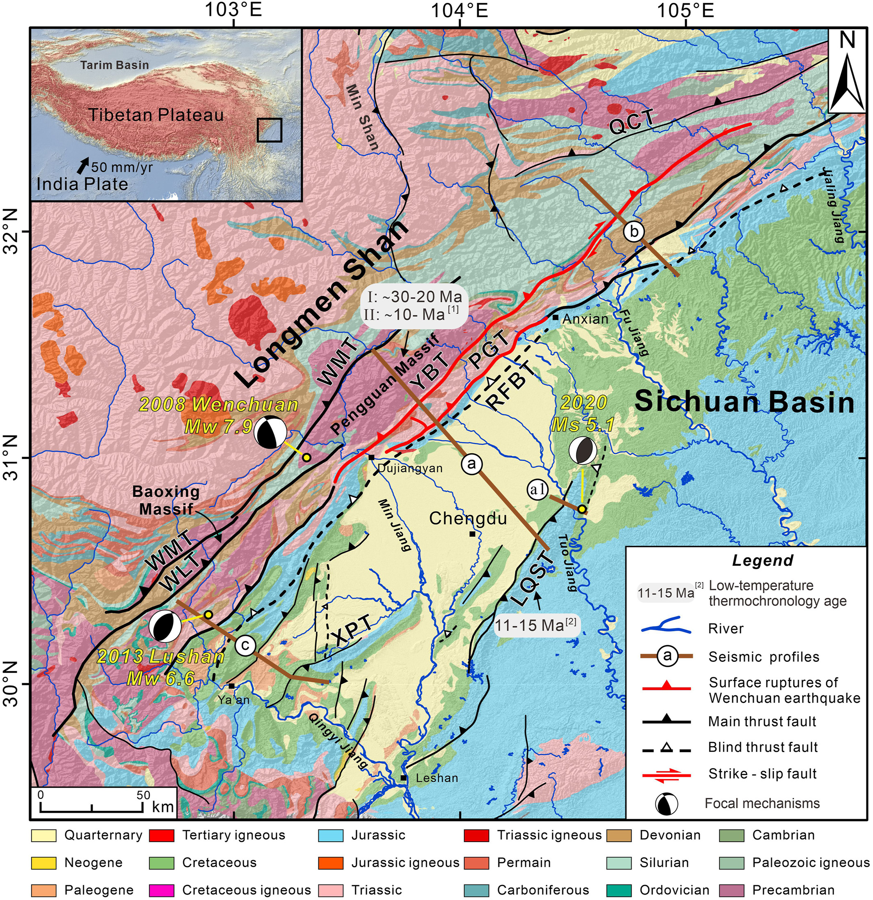
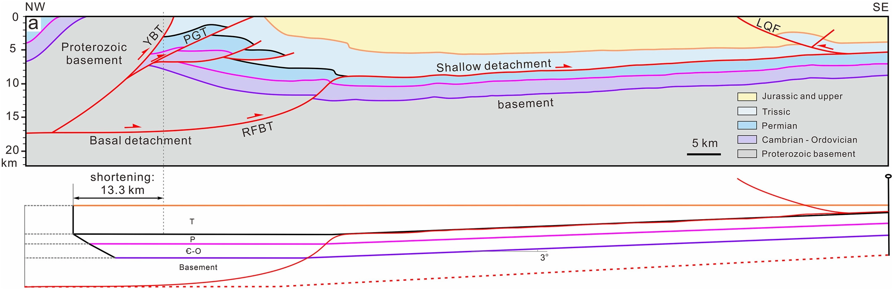
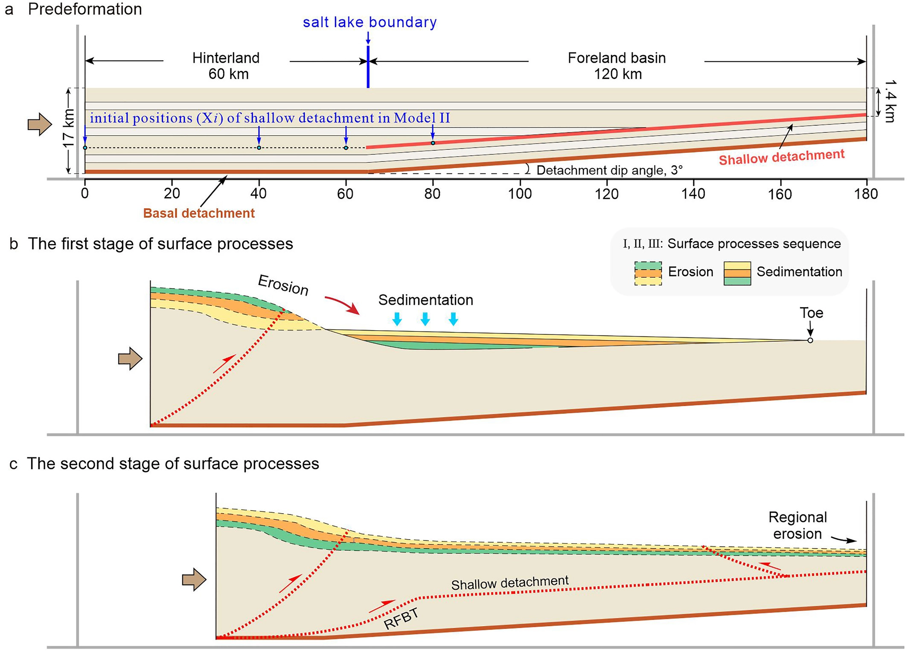
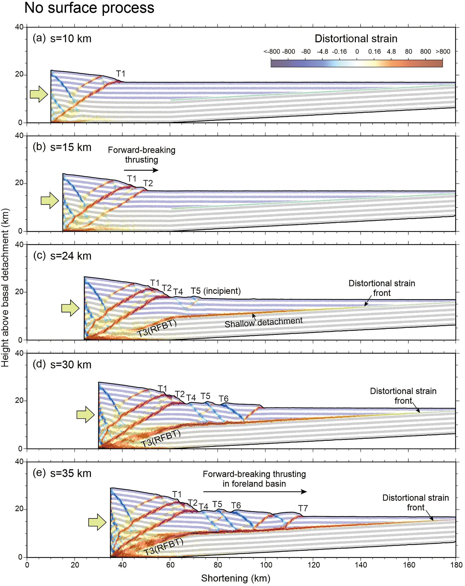
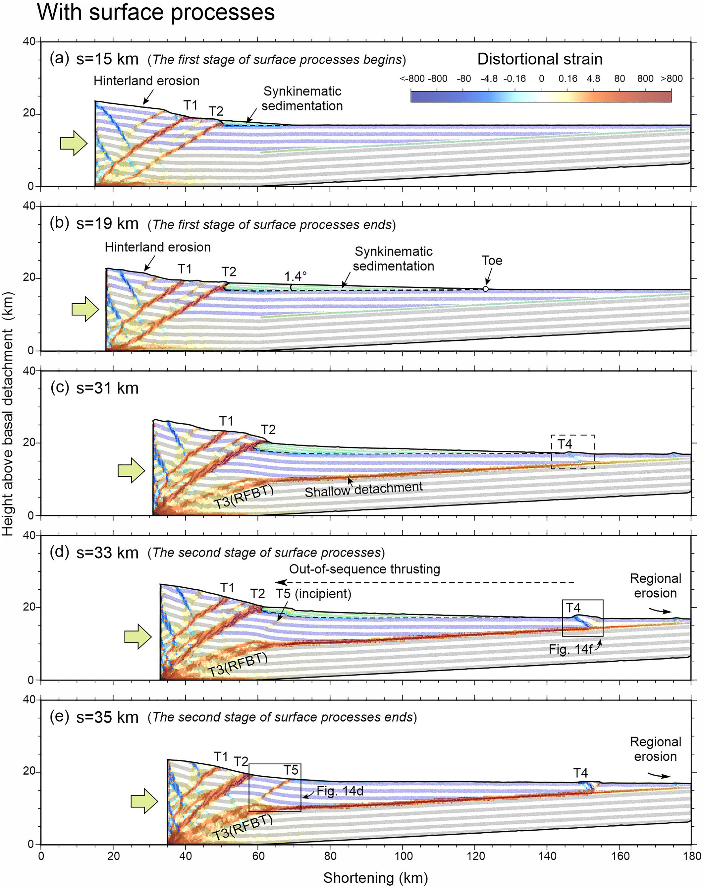
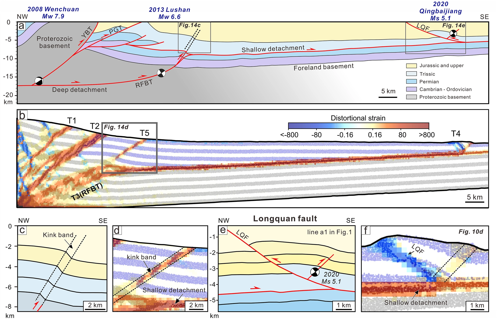

本文VBOX(ZDEM)实验脚本下载： The code for our DEM experiments can be obtained from Open Science Framework (Model I-1, no surface processes, https://osf.io/tz2qg; Model I-2, with surface processes, https://osf.io/pa9sy).
本文研究了位于青藏高原东缘的龙门山褶皱冲断带及其毗邻的川西前陆盆地的构造变形与地表过程的相互作用。利用离散元数值模拟的方法，研究了不同力学性质的滑脱层以及同构造侵蚀/沉积过程对龙门山和川西前陆盆地构造演化的影响。模拟结果显示：晚新生代的两期地表过程显著地影响着龙门山内陆及前陆地区的逆冲序列与应变局部化。在缺少地表过程的影响下，褶皱冲断带以“前展式”向前传播，而在有地表过程中则以“乱序式”（out-of-sequence）的逆冲方式。作者推断晚新生代以来，从四川盆地向西至青藏高原的大规模侵蚀作用传播的影响下，龙门山内陆演变为次临界状态。构造活动性后撤至高原的边缘，导致了龙门山的快速隆升并抑制了大量缩短变形传播至前陆盆地。前陆冲断带沿浅部滑脱层的稳定滑移导致前缘龙泉断层的形成和生长。这些结果解释了为何龙门山内陆冲断带和川西前陆冲断带现今同时处于地震活动状态的原因。该研究对活跃地表过程作用下的褶皱冲断带地震潜在活动性的研究提供了重要的启示(Wang et al.,2022)。
Wang, M., Wang, M., Feng, W., Yan, B., & Jia, D. (2022). Influence of surface processes on strain localization and seismic activity in the Longmen Shan fold-and-thrust belt: Insights from discrete-element modeling. Tectonics, 41, e2022TC007515. https://doi.org/10.1029/2022TC007515
题目
Influence of Surface Processes on Strain Localization and Seismic Activity in the Longmen Shan Fold-and-Thrust Belt: Insights From Discrete-Element Modeling
地表过程对龙门山褶皱冲断带应变分布及地震活动的影响：基于离散元模拟的认识
作者
Maomao Wang1,Ming Wang1,Wang Feng1,Bing Yan1,Dong Jia2
- Institute of Tectonics and Geophysics, College of Oceanography, Hohai University, Nanjing, China
- School of Earth Sciences and Engineering, Nanjing University, Nanjing, China
摘要
We investigated interactions between structural deformation and surface processes in the Longmen Shan fold-and-thrust belt and the adjacent western Sichuan foreland basin (WSFB) in the eastern margin of the Tibetan Plateau. The discrete-element modeling (DEM) method was used to study the influences of the various mechanical properties of the detachments and syn-tectonic erosion/deposition on the structural evolution of the Longmen Shan and WSFB. DEM simulations demonstrated two stages of surface processes during the Late Cenozoic profoundly influenced thrusting sequences and strain localization in the hinterland and foreland portions of the Longmen Shan. Models indicate that the fold-and-thrust belt lacking surface processes propagate in a forward-breaking manner, whereas those with surface processes develop following an out-of-sequence thrusting pattern. We infer that large-scale erosion propagation from the Sichuan Basin westward to the Tibetan Plateau since Late Cenozoic caused the Longmen Shan hinterland to reach a subcritical wedge state. Tectonic activity retreats to the edge of Plateau, enhancing the rapid uplift of the Longmen Shan and inhibiting the propagation of substantial shortening deformation to the foreland basin. The foreland thrust belt slides stably along the shallow detachment, causing the initiation and growth of the Longquan fault in the leading front. These results explain why both the Longmen Shan hinterland and the western Sichuan foreland thrust belts are currently in a state of simultaneous seismic activity. Our findings offer important implications regarding the seismic potentials of other fold-and-thrust belts that interact with dynamic surface processes.

Figure 1. Geological map of the eastern Tibetan Plateau showing the focal mechanisms of the 2008 Mw 7.9 Wenchuan earthquake, the 2013 Mw 6.6 Lushan earthquake, and the 2020 Ms 5.1 Qingbaijiang earthquake. The red lines represent surface ruptures of the 2008 Wenchuan earthquake (Liu-Zeng et al., 2009; Xu et al., 2009). The gray rectangles represent the age of previous published low-temperature thermochronology data, from (E. Wang et al., 2012 )[1] and (Richardson et al., 2008)[2]. The brown lines represent the structural profiles in the study area, where profile (a–c) is shown in Figures 5a–5c, respectively. LQF: Longquan Fault; PGT: Pengguan Thrust; RFBT: Range Front Blind Thrust; WLF, Wulong Thrust; WLT: Wenchuan–Maowen Fault; XPT: Xiongpo Thrust; YBT: Yingxiu–Beichuan Thrust.

Figure 6. (a) Representative structural profile a (see location in Figure 1) in the central segment of the Longmen Shan fold-and-thrust belt (Jia et al., 2010). (b) Restoration results of deformed horizons in foreland region of structural profile (a) The shortening of the base of Jurassic layer in foreland region is 13.3 km. The Cenozoic sedimentary strata within hinterland of the Longmen Shan in this profile are absent.

Figure 8. Schematic representation of the experimental setup. (a) The initial model setup contained two-level detachments with differential mechanical strengths. (b) When simulating the surface processes in the first stage of Model I-2, the eroded materials from the hinterland were deposited sequentially in the foreland. c) When simulating the surface processes in the second stage of Model I-2, surface erosion occurred throughout the wedge, and materials were transported from the system. The stages of b and c of Model I-2 are not to scale.

Figure 9. The progressive evolution observed in Model I-1 (conducted with five stages and no surface processes), with distortional strains superimposed on the colored strata. (a)–(e) The results of Model I-1 at total shortenings of 10 km (a), 15 km (b), 24 km ©, 30 km (d), or 35 km (e). T1–T7 denote thrust faults in the order of their formation. RFBT, Range Front blind thrust.

Figure 10. The progressive evolution observed in Model I-2 (conducted with five stages and surface processes), with distortional strains superimposed on the colored strata. (a)–(e) The results of Model I-2 at total shortenings of 15 km (a), 19 km (b), 31 km ©, 33 km (d), or 35 km (e). T1–T5 denote thrust faults in the order of their formation.

Figure 14. Comparison between the structural cross-section of the central Longmen Shan thrust belt and the results of Model I-2 (simulated with surface processes). (a) Structural profiles of the central Longmen Shan (modified from Jia et al., 2010) and the locations of the 2008 Mw 7.9 Wenchuan earthquake, the 2013 Mw 6.6 Lushan earthquake, and the 2020 Ms 5.1 Qingbaijiang earthquake. (b, c) Comparison of the structural profile and range front structure in Model I-2. (d, e) Comparison of the structural profile and foreland thrust belt in Model I-2. LQF, Longquan Fault. The location of (e) is shown in structural profile a1 in Figure 1.
Conclusions
Based on DEM simulations, we reveal the interaction between thrusting propagation and surface processes, and its influence on modern seismicity in the Longmen Shan fold-and-thrust belt and its adjacent WSFB. Based on our study results, we obtain the following conclusions:
DEM simulations without surface processes indicated that the fold-and-thrust belt developed in an in-sequence thrusting manner. In contrast, DEM simulations with surface processes revealed that the Longmen Shan fold-and-thrust belt developed in an out-of-sequence manner during the late Cenozoic. Starting at ∼30–20 Ma, rapid denudation processes occurred in the Longmen Shan hinterland, and the YBT and PGT Faults continued to be active. From ∼10 Ma to the present, large-scale propagation of denudation occurred from the Sichuan Basin toward the Tibetan Plateau, and tectonic activity retreated to the hinterland of Longmen Shan. Surface processes were relatively quiescent between these two stages, structural shortening propagated forward through the RFBT, and formed the Longquan Fault in the Sichuan basin.
Instrumental and historical earthquakes indicate that the frontal faults in the WSFB and the imbricate faults in the Longmen Shan hinterland region are simultaneously seismically active. We interpret that the activity of the Coulomb wedge of the Longmen Shan is related to the latest stage of surface process. Since ∼10 Ma, large and widespread propagation of erosion from the Sichuan Basin toward the eastern Tibet Plateau caused the Longmen Shan hinterland to enter a subcritical state. The reactivation of reverse faults in the hinterland enhanced the rapid uplift of the Longmen Shan and inhibited most of its slip lateral propagation to the foreland basin. The WSFB is currently in a critical state, with wedge slides occurring steadily along the shallow detachment, with the occurrence of frequent, small-moderate earthquakes in the frontal thrust.
The distribution of Mesozoic salt lakes in the interior of the Sichuan Basin influenced the location, rate, and structural style of thrust slip that propagated from the Longmen Shan hinterland to the foreland basin. Our simulations indicate that the front blind thrust of Longmen Shan range gradually connects the basal detachment and shallow detachment in foreland, and its position is controlled by the western boundary of the salt-lake. Results of comparative experiments show that fault slips from the hinterland of Longmen Shan entered the southwestern Sichuan basin extensively to form several thrust fault-related folds above shallow detachment. However, slip in the northern Longmen Shan was confined to the range front and did not propagate into the northwest Sichuan basin. This suggests that the structural variability along the strike in the Longmen Shan can be explained from the perspective of the internal factors of the Sichuan basin.
Acknowledgments
This research was supported by the National Key R&D Program of China (2021YFC3000604) and the National Natural Science Foundation of China (42172232, 41702202, and 41927802). Numerical simulations were performed on the discrete element modeling software VBOX (www.geovbox.com). The authors thank Julia Morgan (Rice University) for generously sharing her discrete element code (RICEBAL v5.4) and post-processing scripts and algorithms, which have been used to process and display the model outputs presented in our modeling. The authors thank Dr. Chang-Sheng Li (East China University of Technology) for his suggestions in the numerical simulations. The numerical simulation of this study is performed on the computing facilities in the High-Performance Computing Center (HPCC) of Nanjing University. The authors thank Jonny Wu and Sharadha Sathiakumar for their constructive reviews.
Data Availability Statement
The authors used VBOX version 2.1 (C. Li et al., 2021; https://geovbox.com/en/) for the discrete-element method (DEM) numerical simulations. Numerical simulations were conducted at the High-Performance Computing Center (HPCC), Nanjing University. The code for our DEM experiments can be obtained from Open Science Framework (Model I-1, no surface processes, https://osf.io/tz2qg; Model I-2, with surface processes, https://osf.io/pa9sy).